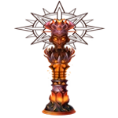
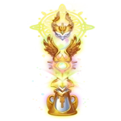

Best Totems Guide (How to Get Totems) in Hero Wars: Dominion Era
- By: Alexandre Domingos. .
Titans Totems in Hero Wars: Dominion Era are among the most powerful and rarest items you can find. They can single-handedly decide the outcome of Titan battles, making them essential for any serious player.
In this guide, we'll cover how to get your first and second totem, the emerald guarantees, totem drop rates, and more!
What Are Totems in Hero Wars?
Totems are special artifacts that enhance your Titans' abilities during battles. They belong to five elements:
- Water Totem
- Fire Totem
- Earth Totem
- Darkness Totem
- Light Totem
Totems are the rarest and strongest items in the game. They are essential for winning Titan battles, it's not the Titans who win, but the totems themselves! Totems boost your Titans’ powers and can drastically change the outcome of a fight.
Hero Wars: How to Get a Totem
You can obtain totems by summoning at the Altar of the Elements. You can either use Titan Artifact Spheres or spend emeralds for a chance at earning a totem fragment. After getting a totem fragment, it appears in your totem evolution section and activates its power in battles.
Once you have a fragment, the game considers that you own that totem even if you haven’t fully summoned it yet. Be careful with unopened gifts or rewards, because if a fragment is hidden inside and not activated, it doesn’t count yet.
Hero Wars Totem Drop Rate
The drop rate for totems is very low if you rely purely on luck. However, there are emerald guarantees that can make it more predictable, known as "bad luck protection."
Hero Wars Totem Guarantee (Bad Luck Protection)
Thanks to the hero wars totem guarantee system, you are guaranteed to receive a totem fragment after spending a certain number of emeralds:
| Totem Fragment | Emeralds Needed |
|---|---|
| 1st Totem Fragment | 4,500 Emeralds |
| 2nd Totem Fragment | 45,000 Emeralds |
| 3rd Totem Fragment | 466,667 Emeralds |
| 4th Totem Fragment | 850,000 Emeralds |
| 5th Totem Fragment | 1,133,333 Emeralds |
| 6th Totem Fragment | 1,416,667 Emeralds |
| 7th Totem Fragment | 1,700,000 Emeralds |
| 8th Totem Fragment | 1,983,333 Emeralds |
| 9th Totem Fragment | 2,266,667 Emeralds |
| 10th Totem Fragment | 2,550,000 Emeralds |
| 11th Totem Fragment | 2,833,333 Emeralds |
| 12th Totem Fragment | 3,116,667 Emeralds |
| 13th Totem Fragment | 3,400,000 Emeralds |
| 14th Totem Fragment | 3,683,333 Emeralds |
| 15th Totem Fragment | 3,966,667 Emeralds |
| 16th Totem Fragment | 4,250,000 Emeralds |
| 17th Totem Fragment | 4,533,333 Emeralds |
| 18th Totem Fragment | 4,833,329 Emeralds |
| 19th Totem Fragment | 5,133,329 Emeralds |
| 20th Totem Fragment | 5,433,329 Emeralds |
| 21st Totem Fragment | 5,733,329 Emeralds |
| 22nd Totem Fragment | 6,033,329 Emeralds |
| 23rd Totem Fragment | 6,333,329 Emeralds |
| 24th Totem Fragment | 6,633,329 Emeralds |
| 25th Totem Fragment | 6,933,329 Emeralds |
| 26th Totem Fragment | 7,233,329 Emeralds |
| 27th Totem Fragment | 7,533,329 Emeralds |
| 28th Totem Fragment | 7,833,329 Emeralds |
| 29th Totem Fragment | 8,133,329 Emeralds |
| 30th Totem Fragment | 8,433,329 Emeralds |
Source: HW Library - Totems Guide
The higher your number of totems, the more emeralds you’ll need. It becomes extremely expensive after the second one, so planning ahead is critical.
Important Note
If you already have a fragment from an event, such as Christmas or a Season reward, your first totem guarantee is considered used! Even if the fragment came from a gift and was not summoned manually, it still counts.
How Many Emeralds Do You Need for a Totem in Hero Wars?
To guarantee your first totem in Hero Wars, you need 4,500 emeralds. However, thanks to the "9 summons" quest, where you spend 500 emeralds each time and get 5,000 emeralds back, your first totem is effectively free.
Tip: At the Altar of the Elements, your first two totem fragments will always align with your Titans' strongest element. For instance, if your Water Titans have the highest total power, you'll receive Water totem fragments for your first two rewards. After that, any fragments you earn will be from random elements.
Hero Wars: How to Get Second Totem
After getting your first totem, the second one will cost 45,000 emeralds to guarantee. The second totem will match the strongest elemental team you have the one with the highest total power across Titans, artifacts, and skins.
Example:
- If your Fire Titans are the strongest, your second totem will also be Fire.
- If your Water Titans surpass Fire before you summon, your second totem will be Water instead.
This is crucial for team-building strategy!
How Totems Work During Battles
Totems activate in battles if you meet specific conditions:
- For elemental totems (Water, Fire, Earth): you must have at least three Titans of that element in the team.
- For Light and Darkness totems: only two Titans are needed to activate them.
You can activate two totems simultaneously if you mix an elemental totem and a Light or Darkness totem. However, you can't combine two elemental totems (for example, Fire and Water together).
Totem Abilities Overview
Water Totem: Blessing of the Depths

Creates a healing pool that damages enemy Titans and heals allies standing on it. Damage and healing occur every half second, dealing up to 525,000 per hit with fully leveled Titans. Additionally, it boosts Water Titans' attack power by 264,000 points. Even today, the Water Totem remains the best totem in the game follow our tips to prioritize unlocking it first and gain a huge advantage for dungeon and battles!
Fire Totem: Cyclone of Destruction
Summons a cyclone that hits enemies multiple times, dealing up to 1,462,000 damage per hit. It also boosts Fire Titans' attack by 264,000. This totem specializes in rapid, deadly offense.
Earth Totem: Wall of Life

Builds a wall that absorbs incoming damage and reflects double the damage back to the enemy, with the wall having 6,750,000 HP. However, since damage from other totems (like Water or Fire) is not reflected, the Earth Totem becomes the least effective option in totem-heavy battles, making it generally considered the weakest totem in the game.
Darkness Totem: Black Hole

Creates a black hole at the enemy center, pulling Titans inward and causing damage over 5 seconds. Can deal up to 2,340,000 per hit. It also boosts Darkness Titans' maximum HP by 3,521,000.
Light Totem: Supernova
Generates a supernova that charges energy for 5 seconds, during which allied Titans cannot die. After that, it explodes, dealing up to 5,400,000 damage to enemies. It also increases Light Titans' attack by 264,000 points.
Understanding Totem Combinations in Hero Wars
In Hero Wars: Dominion Era, it is essential to understand how to combine totems with your titans to activate their powers and gain a strategic advantage in battles. Each type of totem has specific requirements to be activated, and this depends on how you build your titan team. If you don’t build your team correctly, the totem will not be activated, which can negatively impact your team's effectiveness.
For the Earth, Water, and Fire element totems, the totem's power will only activate if you have three titans of the same element in your team of 5 titans. For example, to activate the Water totem, you will need to have three titans of the Water element in your team. The same applies to the Earth and Fire totems: you need three titans of each respective element to activate the Earth or Fire totem. This is crucial, as without this combination, the totem will not activate its powerful abilities during battle, which can harm your strategy.
For the Light and Darkness totems, the situation is a bit more flexible. To activate these totems, you only need two titans of Light or two titans of Darkness in your team. While the required number of titans is smaller, the team composition strategy is still important. If you don’t have the correct amount of Light or Darkness titans, the corresponding totem will not activate, and you will miss out on the bonuses and abilities it offers. The Light totem usually focuses on defensive abilities, while the Darkness totem is geared towards dealing damage to the enemy and destabilizing their formations.
Therefore, when assembling your team, it is essential to ensure you have the correct number of titans from each element to activate the totems you want to use. If the composition is not right, the totem will not be activated, and you won’t be able to benefit from the bonuses and abilities it offers. Proper activation of totems can transform your team and make a significant impact in battles, increasing your chances of success.
Over time, you will learn to better plan your combinations of titans and totems, ensuring that your team is always prepared to activate the necessary powers. Experiment with different formations and understand how each totem interacts with your titans to create an unbeatable team on the battlefield.
Which Are the Best Totems in Hero Wars?
In general, the Fire Totem and the Darkness Totem are seen as the strongest choices for pure offensive strategies. The Water Totem remains incredibly valuable for healing and support, especially when paired with the Light Totem and its powerful death prevention ability. Meanwhile, the Earth Totem is considered the weakest, as it is easily countered by other totems.
The Light Totem and the Darkness Totem offer unique advantages that can shift the course of a battle. Light focuses on protecting your Titans from fatal blows, providing crucial survivability in tough fights. Darkness, on the other hand, enhances offensive power by weakening enemy defenses, making it a top pick for aggressive team compositions. Choosing between them depends on your preferred playstyle and team strategy.
Hero Wars Totem Chance and Strategy Tips
- Always save emeralds for totem summoning events.
- Do not waste first guarantee on free fragments from seasons or events!
- Focus on powering up your elemental Titans to influence your second totem element.
- Plan your Titan team based on the best synergy with your strongest totem.
Conclusion
Totems are a crucial part of your success in Hero Wars: Dominion Era. Knowing how to get totems efficiently, using emeralds wisely, and understanding the totem guarantee system (bad luck protection) will save you resources and help build a dominant Titan team. Focus on your first and second totems and always remember: the stronger your main element, the better your chances of conquering your enemies!
If you're just starting out and feel disappointed with the totem you received especially if it's one of the weaker ones like Earth it's often better to wait for a new server launch and start a fresh account. This way, you can try again for a stronger start and greatly increase your chances of long-term success.
Good luck summoning your totems, Heroes!
Explore new skills with our featured heroes!
 Ultimate Pets Tier List Guide for Hero Wars: Dominion Era
Ultimate Pets Tier List Guide for Hero Wars: Dominion EraLeave Your Opinion!
Did you like our Totem Guide for Hero Wars Web/Facebook? Is there something you didn't understand or would like to suggest changes to? We invite you to join our comment section on the Alexandre Games Blog page. Feel free to express your opinion, clarify your doubts, and share your suggestions.
Click the button below to get started: